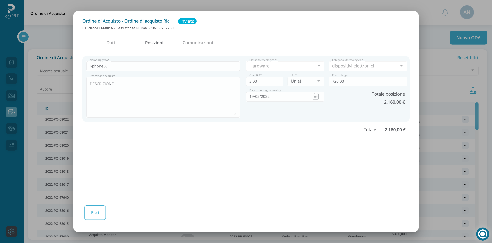

<section class="border-bottom-line px-2 md:px-0 min-h-screen">
    <div class="container-2xl mx-auto md:pb-20">
        <div class="md:my-24 md:mt-0 mt-24 text-center">
              <h1 class="text-3xl  md:text-3xl lg:text-4xl md:leading-tight text-primary text-center px-5 md:px-0">Automazione degli ordini</h1>
            </div>
            <div class="md:flex row mt-12">
                <div class="md:w-6/12 p-3 md:mr-8">
                    
                </div>
                <div class="md:w-6/12 p-3">
                  <h1 class="text-xl  md:text-xl lg:text-2xl xl:text-3xl md:leading-tight my-5 text-primary">Digitalizza interamente il processo di ordine e di acquisto.</h1>
                  <p>
                    Perfeziona in modo interattivo gli ordini e accedi al monitoraggio delle capienze residue e delle scadenze; riduci errori e discrepanze nelle entrate merci. Con Procurement24Ore puoi dimenticare blocchi e intoppi nei processi di ordine e di acquisto e ti assicurerai completa trasparenza e tracciabilità delle fasi di negoziazione e perfezionamento degli acquisti.                     </p>
                  <br>
                  <p>
                    Crea una Richiesta di Acquisto che sarà sottoposta al flusso approvativo; agli utenti coinvolti nel processo di approvazione sarà inviato un avviso ed essi potranno accettare, chiedere una modifica della RdA al richiedente o rifiutare la RdA. Una Richiesta di Acquisto con esito positivo diventerà un Ordine di Acquisto (OdA).  
                  </p>
                  <br>
                  <p>
                    Nella sezione Ordini di Acquisto potrai tenere traccia di tutti gli ordini emessi nei confronti di ciascun fornitore e accedere ai dettagli. Gli Ordini di Acquisto sono divisi in base alla loro origine: derivanti una RdA o diretti.                 
                </p>
                  <div class="md:flex mt-5">
                    <button routerLink="../approval-flow" class="btn--secondary__blue mt-4 pr-8 w-full text-sm tracking-widest leading-none relative my-4"  type="button">
                        Flussi approvativi <span class="arrow absolute pl-1">→</span>
                    </button>
                    <button routerLink="../suppliers" class="btn--secondary__blue mt-4 md:ml-5 pr-8 w-full text-sm tracking-widest leading-none relative my-4"  type="button">
                        Albo Fornitori <span class="arrow absolute pl-1">→</span>
                    </button>
                    <button routerLink="../analytics" class="btn--secondary__blue mt-4 md:ml-5 pr-8 w-full text-sm tracking-widest leading-none relative my-4"  type="button">
                        Analitiche <span class="arrow absolute pl-1">→</span>
                    </button>
                </div>
                </div>
            </div>
    </div>
</section>